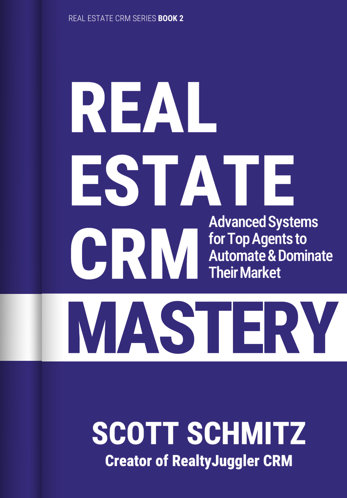
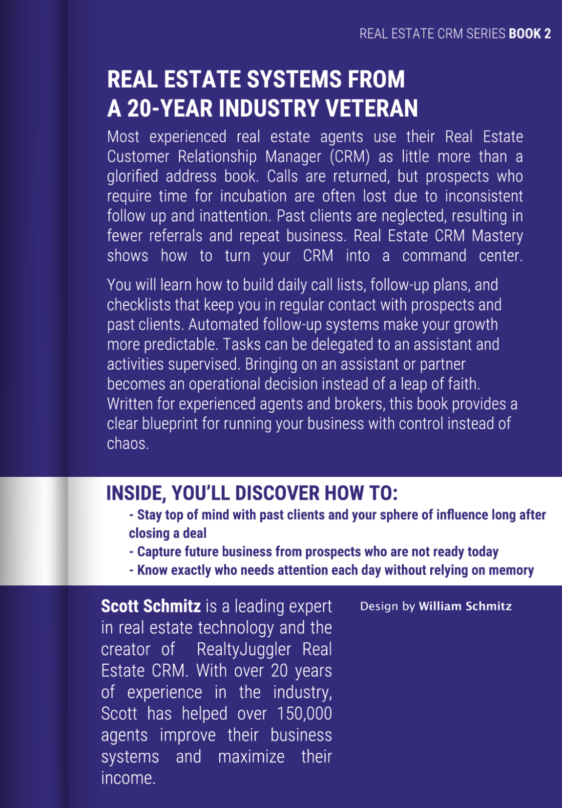

Coming Fall 2026
Amazon (Digital)Coming Fall 2026
Amazon (Paperback)REAL ESTATE SYSTEMS FROM A 20-YEAR INDUSTRY VETERAN
Most experienced real estate agents use their Real Estate Customer Relationship Manager (CRM) as little more than a glorified address book. Calls are returned, but prospects who require time for incubation are often lost due to inconsistent follow up and inattention. Past clients are neglected, resulting in fewer referrals and repeat business. Real Estate CRM Mastery shows how to turn your CRM into a command center.
INSIDE, YOU'LL DISCOVER HOW TO:
—Mario Jannatpour, The Honest Real Estate Agent: A Training Guide for a Successful First Year and Beyond
Your database of past clients, prospects, and friends is your most valuable asset. To keep this information accurate and maintain your relationships, it’s essential to connect with them regularly. This chapter explains how to use your real estate CRM to nurture your relationships through consistent communication via email, texting, postal mailings, newsletters, and eCards. I will demonstrate how to track engagement and use these communications to maintain the accuracy of your database.
I recommend reaching out to your prospects and contacts through multiple channels, including phone calls, text messages, emails, drop-ins, eCards, and postcards. Some people prefer speaking on the phone. Others, especially younger individuals, are less likely to answer calls but more likely to reply to text messages. Still others might prefer email, while some will be most impressed by meeting you in person. Using different communication methods lets you connect with the people in your database in a meaningful, memorable way. If you rely on only one form of communication, like email, you’re not able to make the kind of impact you can by taking advantage of multiple forms.
Text After Voice Secret: When you call a lead and they don’t answer, do not leave a voicemail. Instead, send them a text message along the lines of “Hi Sally, this is Josh Wheeler, from RE/MAX. I just tried calling you to give you an update about the house on Main Street. When is a good time for a quick chat?”
While personalized one-on-one communication is the ideal way to build and maintain relationships, mass communication methods, such as bulk email and postcards, also have value. You will see the best results when you combine personalized messages with mass communication. The most effective form of mass communication is sending an annual Christmas card to everyone you know.
Regardless of which communication method you choose, your real estate CRM helps manage and coordinate your efforts to achieve the best results. You can use the built-in content library to send printed letters, scheduled drip emails, eCards, and flyers. You can also use the text message chat feature to send text messages, and your CRM can even dial your mobile phone for follow-up calls. Don’t overlook the effectiveness of postal mail either. Your CRM can assist by printing mailing labels, creating mail-merged letters, and exporting targeted mailing lists for mailing houses to send postcards.
Lucky Ladder Secret: Your aim in every prospect interaction is to communicate as interactively as possible. Think of communication methods as rungs on a ladder. At the bottom are email exchanges; a little higher are text messages; even higher are phone conversations. You should always work to climb the ladder by moving away from one-sided communication. Your ultimate goal? Meeting face to face.
One of the main advantages of using a real estate CRM is that it helps you gradually collect contact information. In lead nurturing, having multiple communication channels increases the chances of turning a lead into a client. Additionally, offering multiple connection methods provides backup options if one fails. For example, if you only have an email address and that person changes their email address, you might be stuck—unless you also have their phone number!
You should also add notes to the contact records in your database about how you communicated and what you discussed. For example, you might have called on a weekday at 5 pm and left a voicemail. The next time you try to contact that person, you might try a different time or use a different method, such as a text message. Calling someone can be tricky, as many people screen their calls and may not answer, especially during business hours. So, the chances of someone answering when you call might be quite low.
I recommend maintaining a use-it-or-lose-it strategy for managing your database. If you haven’t reached out to someone in your database in over 2 years, consider deleting their record. If you don’t remember them, delete their record—they probably won’t remember you either.
Maintain regular contact with everyone in your database. This keeps you top of mind as the helpful real estate agent who is always available to assist. Additionally, consistent outreach helps ensure their mailing addresses, phone numbers, and email addresses remain accurate. People often change their contact details, and your clients are especially likely to do so—after all, they’re considering moving! Send a Christmas card each year to confirm their mailing address, an eCard at least annually to verify their email address, and call them at least once a year.
When you send an email from your CRM, several processes occur behind the scenes to maximize the likelihood that your email is delivered and read, a metric known as deliverability.
About 48% of all emails sent are spam1. Spam is unsolicited bulk email. Every email recipient has a spam filter that decides whether your email is spam. This automated process considers many factors, including your server’s email reputation, the email’s content, the sender’s identity, and the history of emails exchanged between the sender and recipient. When an email is flagged as spam, it goes to the recipient’s spam folder. In extreme cases, the email may be rejected or automatically deleted. This can happen if the original email contains or is suspected of containing malware, such as a virus.
To maximize deliverability, your CRM vendor employs a postmaster whose role is to ensure the CRM’s mail servers maintain a good reputation with other email servers. Each email server has a reputation based on the quality of the emails it sends. The reputation of your CRM’s email server is one factor used to determine whether your emails will be placed in the recipient’s spam folder. If the sending server’s reputation is particularly poor, the server itself can be blacklisted, causing all emails from that server to be automatically routed to the recipient’s spam folder or even blocked from delivery entirely, resulting in failed delivery.
For this reason, the postmaster is primarily responsible for ensuring that a single bad actor does not harm the server’s reputation, which could reduce the deliverability of all other agents’ emails. This is a labor-intensive job that free CRM or low-quality vendors often lack, leading to significantly lower email open rates.
When you send an email, your CRM monitors whether it was successfully delivered. A failed delivery is called a HardBounce and shows that the email address is invalid or no longer active. Sending many hard-bounced emails can harm your email reputation. To prevent this, your CRM keeps a list of invalid email addresses that have hard-bounced. As a precaution, it automatically avoids sending emails to addresses that have previously hard-bounced.
Unread Alert Secret: Your CRM tracks when an email is sent but not opened and read. If several emails aren’t being read, they may be ending up in spam or the recipient may no longer be using that email address. Usually, 4 emails in a row are considered a red flag. Your CRM may identify these low-engagement records by adding a category called “Unread” to those records. If that happens, stop sending additional emails, as it could damage your email reputation. Instead, contact this person through another method, like a phone call.
Along with automated spam filters, the recipient of your emails can also manually mark any email as spam. They do this by clicking the spam icon in their email program. When they do that, your email goes to the spam folder, and both the email server and your CRM are notified that any emails from you should be considered unwelcome. After this, future emails you send to that person will automatically go to their spam folder.
You might wonder why people click the spam icon instead of the unsubscribe link in an email. Maybe they opted out earlier, but the emails keep coming, so they become angry. Or perhaps they don’t trust the sender and want to alert the authorities. A complaint rate of 1 complaint per 1,000 emails sent is considered reasonable, but higher rates can harm your reputation and increase the likelihood that all your future emails will be automatically marked as spam.
If you continue sending emails to someone who has marked one of your messages as spam, your email server’s reputation could be harmed. Therefore, your CRM will monitor all spam complaints and automatically stop you from sending any more emails to that address.
Mail servers regularly share their lists of senders flagged for spam. For example, if you send an email to someone with an AOL address and they mark it as spam, AOL’s servers will share that information with Yahoo, Hotmail, Outlook, and other email services that may be interested. While this sharing doesn’t automatically block all emails from you, it warns other email servers that your address might be suspicious, prompting them to proceed with caution.
Federal regulations require all bulk emails to include a physical mailing address and an opt-out option. Your CRM automatically adds this information to all your email communications to ensure compliance with federal laws.
Your CRM also tracks when someone opens and reads your email. This is done by including an invisible image in each email. When the email is opened, the image loads, and the CRM’s servers then record that your recipient has opened it. If you send multiple bulk emails, you can analyze trends and see whether a specific mailing has a notably high or low open rate. A typical open rate for bulk email is around 31%. You can also check whether your open rate is declining month to month. This might indicate email fatigue, meaning you’re sending emails too often or that recipients are no longer interested in your content.
When you send an email, the recipient’s spam filter checks whether your email address is in their address book and whether you have exchanged emails before. Both factors are considered positive and significantly reduce the likelihood of your email being flagged as spam. That makes your first contact the most important. If you’re sending someone their first email, ask them to reply with a quick note confirming they received it. That helps train their spam filter to recognize you as safe. You can think of this like visiting someone’s house and having their dog sniff you in front of the owner so the dog knows you’re OK and will consider you a friend in the future.
First impressions count, especially in email subject lines. In a crowded inbox, your subject line often determines whether your message is opened or deleted. It also helps spam filters decide whether your email belongs in the inbox or the spam folder. Attention-grabbing subject lines can trigger spam filters. The best approach is to use a subject line you might send when emailing a friend. It’s wise to avoid tactics spammers use to make their subject lines stand out. Spam filters are constantly evolving and getting better at detecting old tricks. Avoid using ALL UPPER CASE or replacing letters with special characters to make your email look more appealing. Overuse of punctuation or emojis in email subjects can flag your message as spam. Avoid words like “money,” references to large dollar amounts, allusions to a get-rich-quick scheme, or offers that spam filters call a “free lunch,” meaning something for nothing. When something looks too good to be true, spam filters become suspicious. Just including the word “free” can sometimes be enough to send your email to the spam folder.
Your goal is to make sure your emails aren’t mistaken for spam or scams. Since most people read emails on their smartphones, avoid long subject lines, as those won’t display well on small screens. Also, don’t reuse the same subject line for multiple emails to the same recipient, as it can confuse both recipients and spam filters. Is this the same email sent twice or a new one? If they delete your first message without opening it, their spam filter might remember that and start sending future messages with the same subject line to the spam folder.
Always include a call to action at the end of each email. Invite them to visit your website to learn more, reply to your email, or call you. Emailing someone without expecting a reply or phone call isn’t helping you. Your main goal should be to create a back-and-forth conversation.
Your real estate CRM offers a library of letters that follow all these guidelines, pass spam filters, and are clear and engaging for your prospects. You can personalize these email templates to better reflect your personality, and they serve as a great starting point for your email outreach.
Postscript Powerplay Secret: Eye-tracking studies show that the postscript, or “P.S.”, is one of the most-read parts of any email, often getting more attention than the body of the message itself. The P.S. is the last thing your reader will see and the first thing they will act on, so make your P.S. count.
Most people will read your emails on their mobile phones, so keep the formatting simple and the length as short as possible. Excessive formatting can make your email harder to read on a smartphone screen and cause readers to lose focus more quickly. Stick to one font and avoid jarring changes in font size and style. You should also limit the use of color in the text, as it can be distracting and look unprofessional.
I recommend including a letterhead with a portrait photo and a company logo at the top of your emails. This way, your recipient sees that information immediately and recognizes your email as legitimate, not spam. If they read your email on a smartphone, they might need to scroll to see your signature at the bottom, so placing your branding at the top ensures they see it even if they don’t have time to read the full email right away. Even if they don’t reach the end, they will already know who you are.
You should also include a signature at the bottom of each email with your name, job title, brokerage, and phone number. Keep your signature simple so it doesn’t overshadow the email content. Too many contact options can lead to decision paralysis when someone decides to call you.
Never include an email address in your emails that differs from the one you use to send them. This is something scammers do, and you don’t want your email to look like a scam.
It’s common to include images in your emails. If you add images, be sure to include some text as well. Spam filters sometimes flag emails containing only images as suspicious. Spammers may try to bypass spam filters by embedding their content in an image, hoping to trick the filter into ignoring the text within the image. Another consideration is that some people might view your emails with images turned off, which is common in high-security situations, such as those involving bank officers, attorneys, and others with strict security requirements.
While a newsletter can still be part of your promotional strategy, it should be viewed as just one of many channels for sharing your content, alongside modern formats such as your website and social media. One challenge with sending a monthly newsletter is that it can lead to high unsubscribe rates and low open rates due to reader fatigue.
Seasonal Send Secret: Send your newsletter only twice a year in the fall and again in the spring. This maximizes the impact of your market updates.
If you send your newsletter via email, a deliverability strategy is essential. Your CRM automatically tracks opt-outs, invalid addresses, and spam complaints to help you maintain a clean list. It can also monitor who has read your newsletter. Your open rate significantly influences how spam filters treat your emails; if recipients consistently ignore your newsletter, future messages may end up in their spam folders. Regularly check your open rates. If you notice a decline, a high number of opt-outs, or complaints, consider narrowing your distribution2. The postmaster of your real estate CRM is a valuable resource and can provide statistics to help identify issues.
Finally, consider alternative distribution options for your content instead of creating your own newsletter. Some brokerages and franchises offer a joint newsletter in which agents share mailing lists. This approach requires less work and can be ideal for agents who lack the time to produce their own content. You might also contribute to existing newsletters from local organizations. Many schools, churches, and community groups publish newsletters, and you can often place an ad for a small fee and benefit from their established distribution. You might also focus on social media instead, which allows you to reach an audience beyond your mailing list.
Once you’ve established your overall strategy, the content of your newsletter will ultimately determine its success. Your newsletter should highlight your expertise in the local real estate market. Avoid generic articles, such as home improvement projects with the best returns, because this information is readily available online and offers little added value.
Remember, your newsletter is selling YOU, so it should offer information only you are uniquely qualified to provide. Keep it local and fresh. Because you focus on real estate in a specific area, your newsletter should feature hyper-local content. Just-listed and just-sold homes are a great starting point, helping homeowners gauge home appreciation and giving potential buyers a sense of current market prices.
Be sure to include regional trends in home prices. Are home prices trending upward? How do they compare with state and national levels? Discuss new construction projects, such as shopping malls or new home developments, and share your expert insight into how they might affect the community and property values3.
Non-real-estate content can also work well, as long as it’s local. Consider reviewing a new shop or restaurant in your neighborhood or sharing information about local fundraisers and charity events.
Finally, avoid certain types of content. For example, including a recipe is common, but it doesn’t support your message as a local real estate expert. If you’re proud of your apple pie, bake one for your next open house and include the recipe on the back of the flyer. The smell will create a memorable connection to the property, making it a much more effective use of your culinary skills.
Consider collaborating with a local mortgage broker, who can provide valuable content on interest rates and refinancing, and with whom you can share costs, effort, and distribution lists. Other potential partners include home stagers and local moving companies.
I recommend sending a newsletter no more than twice a year, once in the spring and once in the fall. The more frequent the newsletter, the higher the likelihood of unsubscribes. Instead, I recommend treating your newsletter as part of a multichannel approach to staying in touch with your prospects. Make each newsletter’s subject line unique by including the month and year to prevent the newsletter from looking identical to previous editions.
A newsletter does not eliminate the need to call, text, drive by, and even send postcards to your prospects. You can also use drip emails, a sequence of highly targeted emails delivered over time. The advantage of a drip sequence over a newsletter is that it addresses the recipient’s specific life circumstances, whereas a newsletter addresses the general market. For example, a first-time homebuyer could receive a targeted sequence of emails that educate them about the home-buying process. When you use multiple communication channels, the results are synergistic. You can maintain regular contact without being overwhelming.
Avoid traditional multi-column layouts, as they are hard to read on mobile devices. A single-column email body performs best with spam filters and readers. Most people will scan your email first, then decide whether to read it thoroughly. Short, straightforward messages are often the most effective. Given modern readers’ limited attention spans, keep your content concise and ideally to a single page. Consider including a snippet of your newsletter and a link to your website or blog for the rest. This approach keeps your emails easy to read while also driving traffic to your site and increasing your visibility in Google search results.
Finally, incorporate modern media into your plan. Video content is increasingly popular, so consider creating a short YouTube video for each article. Video doesn’t replace written content; it complements it, making it easier for search engines to understand. Combining a well-written blog post with an embedded video is an ideal formula for online promotion. Your CRM can embed videos in your emails. When you do this, a thumbnail image of the video appears inline in the email body with a prominent play button. When clicked, the video player opens. While YouTube is the most common video platform, other options such as Vimeo and Vidyard are also available.
Once you’ve created your content, decide who will receive your newsletter. Add a “Newsletter” category to the people in your database who should receive your newsletter. Sending your newsletter to everyone in your database is a mistake, as it can lead to many people opting out. While your mother might love to hear from you more often, that newsletter isn’t what she had in mind! You should definitely avoid sending your newsletter to vendors and other real estate agents. It is simply a matter of courtesy. When you contact these people, it should be for something important, such as presenting an offer or getting a vendor to assist with one of your listings. The worst possible outcome is being unable to reach these key parties via email because they previously marked your emails as spam.
Some real estate CRMs offer a generic newsletter you can personalize and send. This is a particularly risky practice because generic content is far more likely to be flagged as junk than hyperlocal, personal content. If you send that newsletter monthly, you should expect at least half of your database to unsubscribe within the next 12 months. You might tell yourself that people who opt out are not potential clients, so good riddance. Instead, consider that you’re making a bad impression with a generic newsletter sent too often. When done properly, newsletters can be a useful part of your overall strategy. But they cannot replace the personal attention a top agent provides to their friends through phone calls, birthday wishes, and physical Christmas cards.
In addition to a letter library, your real estate CRM includes an eCard library. These are emails featuring an animated image and text, similar to a greeting card. eCards offer several benefits. They’re easy to read on a phone and don’t take much time to send or view. Past clients who know you well might be more receptive to a quick greeting than a lengthy monthly newsletter, especially if they recently bought a home with you and aren’t very interested in current market trends. Sometimes, just checking in means more than the message itself.
Like a greeting card, eCards can be used to wish someone a happy holiday, “Get Well Soon,” or “Happy Birthday.” They are best suited for reconnecting with someone you already know. Receiving a greeting card from someone you’ve never met can be a little disconcerting. Birthdays and home anniversaries are perfect occasions to send an eCard. They are personalized for the individual, and for a home anniversary, they can be directly relevant to your relationship with past clients. Few things provide a better reason to reach out to someone unexpectedly. The ability to schedule your greeting cards makes it even easier, and your CRM can automate this process. That way, you never miss an important date.
The eCard Engagement Secret: Sending a friendly holiday eCard helps you maintain a healthy database. Active contacts will open your email, while inactive ones won’t, and invalid email addresses can also be identified. Use these results to see who’s still engaged and remove invalid or inactive people from your database.
Holidays like Halloween, the 4th of July, and Easter are great times to send an eCard. While a birthday eCard is sent to someone on a specific day, a holiday eCard is usually sent as a bulk email to many people at once. Not everyone wants to read a monthly newsletter full of market analysis. Often, a short, simple greeting does the same job of staying in touch and remaining top-of-mind. It doesn’t have to say much, but it reminds them you’re there when they need you. There are holidays all year round. Pick one or two that matter to your audience and use them as check-ins.
While easy to send, eCards should be used sparingly. Sending a monthly eCard can clutter inboxes and dilute the impact of your more personal messages. Think of eCards as a supplement to your more personal outreach, not a replacement. Use them for minor holidays like Halloween or the 4th of July as a friendly, low-stakes touchpoint. They also serve a second purpose: verifying email addresses in your database.
I recommend sending one or two eCards each year to friends, family, and past clients. For special occasions like birthdays and home anniversaries, consider combining phone calls and texts with eCards, alternating each year. For bulk eCards, you might send them on different holidays each year. For example, if you sent an eCard for Easter and Halloween this year, try sending one for New Year’s and Thanksgiving next year. By keeping things fresh, you reduce the risk of email fatigue, which occurs when you send too many emails too quickly, prompting recipients to complain or opt out to stop the flood of messages.
Sending eCards also helps you keep your database accurate. About 22% of email addresses become invalid each year as people switch providers4. Your real estate CRM tracks these issues by marking invalid emails as HardBounces and flagging contacts who have not opened multiple messages. This information is ideal for identifying people you should contact by an alternative means, such as a phone call. This is a good opportunity to reach out and check in on how things are going. One notable reason someone might change their email address is that they have moved.
In an era of overflowing inboxes and spam filters, physical mail remains one of the most reliable ways to reach your clients. A tangible item they can hold is more memorable and impactful than a fleeting email. Your real estate CRM can handle your physical mailings in three main ways. First, you can export a CSV file of the mailing list for use with a mailing house such as ReaMark, ProspectsPlus, or SendSations. This works well for bulk postcards5. Second, you can print a batch of labels or envelopes directly from your CRM, perfect for Christmas mailings or bulk letters you want to send by hand. Finally, you can print individual labels or envelopes from a queue of letters within your CRM. This last option is ideal for personalized, time-release drip letters or postcards, which you can schedule using a time-release drip sequence6.
Postcards offer significant advantages over printed letters. They achieve higher response rates because their message is easily accessible. Even if someone plans to toss a postcard in the trash, they can’t help but quickly scan the front and back. Sending postcards is also more affordable than mailing a regular first-class letter, thanks to lower material, handling, and postage costs. For these reasons, postcards are an excellent tool for geographic farming. I recommend sending “just listed” and “just sold” postcards to the neighborhood of each of your listings, once when you get the listing and again when the listing closes.
You should also send postcards to your geographic farm in the fall and spring, with updates on the latest sales and listings in the area. For large mailings, your best option is an online postcard service. These services print and mail your postcards; all you need to do is export a mailing list as a CSV file. Using these services can help reduce postage costs by taking advantage of bulk mail presorted rates. If your goal is to send a postcard to everyone in a neighborhood, you can use the postal service’s Every Door Direct Mail (EDDM) service. This program allows you to mail postcards to every address on a specific mail carrier’s route without needing individual names or addresses, significantly lowering your postage and list-purchasing costs.
The Primary Post Principle: Mail postcards for vacation properties to the owner’s primary home address, not the address of the vacation property. Your marketing gets read instead of rotting in an empty, “ghost” mailbox for months.
While postcards are useful for general marketing, printed letters offer the privacy needed for more sensitive prospecting, such as probate or pre-foreclosure leads. Your real estate CRM can print mail-merged letters, along with printed envelopes or mailing labels. With your handwritten signature, printed letters add a level of professionalism ideal for situations where you’re offering professional services and positioning yourself as a trusted advisor.
For targeted mailings of individual letters or postcards, you can use your real estate CRM’s label-printing feature to handle the process in-house. A popular, affordable option is to print on standard 8.5” x 11” Avery sticker label sheets using your printer. Simply load the labels instead of plain paper, and your CRM can format and print them accurately. If you print many labels, it’s worth investing in a dedicated label printer, such as a Dymo LabelWriter, which is faster and more convenient. For a professional appearance, you can also have your CRM print addresses directly on your envelopes. This requires a printer that supports envelope feeding, eliminating the need for stickers.
Another related service to consider is a specialized direct-mail service, such as YellowLetterHQ.com or YellowLetterShop.com, which prepares and sends handwritten-looking letters on yellow, pink, or white lined paper. This unique, eye-catching format is more likely to be opened and read, making it highly effective for expired listings, FSBOs, and estate sales. Your CRM can help you organize and export a CSV file compatible with these services.
Direct mail has a distinct advantage: it has a greater impact than email, helping you stand out amid digital clutter. Taking the time to send a stamped letter sets you apart from other agents who send emails without much thought. For FSBOs, expired listings, and probate leads, mailing a physical letter may be the only way to reach these contacts. A print strategy is a vital tool for prospecting and maintaining relationships within your farm area and sphere of influence.
Text messaging has several advantages over other forms of communication. Unlike a phone call, a text message does not require someone to answer the phone to receive it. That means your prospect can still read and respond to your text message even if they are at work. The open rate for text messages is far higher than for email, and text messages are often read within minutes, whereas email is typically read within a day or two of being sent.
Your real estate CRM can help you send text messages through a feature called text message chat. It works just like sending a text on your smartphone, but it offers several advantages over using your mobile phone. Because you’re using the CRM on your computer, you can use your keyboard and mouse, making messages faster to compose and send than from your smartphone. You can also copy and paste template text and adjust it as needed, producing higher-quality work with fewer typos. Because text message chat is integrated into your CRM, you can see the full chat transcript along with all your notes and contact information for contacts and transactions. You can also include links to service reports and other resources, such as photos, to communicate about your listings.
You can register a dedicated phone number for use with your CRM. This number lets you send and receive texts, set up text message alerts, and use your CRM’s call capture feature. When you send a text message from your CRM, it comes from that dedicated number. When someone replies to one of your texts, the reply is sent back to your CRM, and a copy is forwarded to your mobile phone as a text message. You would typically choose a phone number with your local area code. You can even pick a toll-free number if you prefer.
Just like with emails, there are federal rules and regulations you must follow when sending business text messages. These rules are nuanced and carry greater liability than sending an email without permission. Enforcement is also much stricter due to the high level of traceability for text messages and the limited number of U.S. carriers (T-Mobile, AT&T, Verizon).
The main rule concerns permission. If someone has given you permission to send them text messages, you’re okay. However, unsolicited commercial text messages are not allowed. Sometimes, permission must be in writing; other times, consent can be implied. It depends on the type of message you’re sending and how you’re sending it.
The one area you should be cautious about is sending a solicitation text message to someone you do not know and who is not expecting to hear from you. For example, if you used a lead service to obtain FSBOs and expired listings, those people did not ask to be contacted by a real estate agent, so no permission, written or implied, was given. In that case, your best approach is to call them, drive by, knock on the door, or send a printed letter. A text message from a complete stranger is unlikely to receive a positive response and violates federal consent rules.
Another thing to consider is whether your communications are personal with someone you know. If that is the case, it is assumed you have implied permission, and it is acceptable since the communication is personal. For example, let’s say you wanted to send a quick text message to a past client wishing them a happy birthday—that would be perfectly acceptable. Another example is sending an informational message, such as confirming an appointment date and time, to someone with whom you have an ongoing business relationship. This is another example of implied permission, and that would be considered OK.
The rules distinguish between business solicitation messages and other types of texts. Business solicitations require the highest level of permission: written consent. By contrast, personal messages require the lowest level of permission, namely implied consent.
Prior written consent can be obtained in several ways. If someone texts your call-capture phone number, you have implied written consent because they initiated contact and you are replying to their inquiry. When someone fills out the contact form on your website, you can obtain prior written consent through the “terms of service” page. The communication consent section of your “terms of service” clearly states that by submitting their information, the user grants you and your agents permission to contact them by phone, email, and text message. By completing the contact form and clicking submit, the user also provides prior written consent to receive recurring marketing and informational messages via text. The user can revoke this consent at any time by replying “STOP” to any text message or by using the unsubscribe link in emails. In addition, you must include a statement to this effect on the contact form page, with a consent checkbox linking to the terms of service. The same rule applies to the open-house form in your CRM, where a prospective buyer provides their phone number.
For web leads from third-party sites like Zillow, their terms of service will include similar language. You should check with your lead service about their specific terms and allowed messaging. They will be able to clarify exactly what is permissible based on the method by which the lead was obtained.
The compliance requirements are much stricter for automated text messages, including time-release drip sequences and bulk campaigns. The key difference is that permission to reply to an inquiry is not considered the same as written permission to send an automated time-release sequence of text messages. A simple checkbox on your website would not be sufficient to enroll someone in an automated text-messaging drip sequence.
Due to an increase in lawsuits over unsolicited texts and the high liability of fines (up to $1,500 per message), most CRM vendors have eliminated automated texting features. This change was necessary because agents often lacked the required written consent for high-volume, automated outreach, creating significant legal risks for both agents and software providers.
Another rule you must follow is to include in your initial text message an explanation of how someone can opt out of receiving text messages from you. This is usually done by including a note in the first text message that explains they can reply with “STOP” to stop receiving messages. Your CRM automatically adds this phrase at the beginning of any text message thread to ensure compliance with this rule.
Several industry practices are in place to align with the spirit of the regulations. The primary goal is to reduce or eliminate unwanted text messages. To send text messages in the United States, you must register with the A2P 10DLC (Application-to-Person 10-Digit Long Code) system, managed by a third party called The Campaign Registry (TCR). This is an industry-wide requirement enforced by mobile carriers such as AT&T, T-Mobile, and Verizon to combat spam and verify business communications. Your CRM vendor can assist with the registration process. It involves verifying that you are a legitimate business with a physical mailing address and, ideally, a website with clear terms of service that permit sending text messages. They will also ask for samples of the messages you intend to send.
The registration process can take a few weeks, and it is important that you provide as much complete information as possible. The purpose of the application is to identify fraudulent or fake companies that send malicious text message solicitations. I have found that using a toll-free phone number requires slightly fewer documentation requirements, as it is assumed that businesses that take the effort to obtain one are less likely to be deceptive.
Failure to register will result in your messages being blocked or filtered by carriers. Because there are very few carriers and the registration process is very strict, I have found that without registration, almost all the text messages you send will be blocked and never received.
Canada has rules similar to those in the US, but they are slightly stricter regarding implied consent. They also set a time limit on consent—usually six months—that doesn’t exist in the US. Commercial messages must also include your full contact information, typically via a link to your website at the end of the message. Instructions for unsubscribing should be included in every commercial text or via the link.
Like email, people can mark your text messages as spam. Mobile carriers use automated systems to track these complaints and review your full message history to determine whether your phone number should be temporarily blacklisted. In serious cases, the company that sends your messages, such as Twilio, might block your number while a review is in progress. Because there are few carriers, they have significant influence and can unilaterally block any phone number based on even a single complaint.
For these reasons, text messages are useful for responding to inquiries from prospects or clients, following up with past clients, or reaching out to people in your sphere. However, they are not appropriate for soliciting strangers to whom you have no permission to text.
Face-to-face interaction remains the gold standard for communication. It lets you present yourself in the best possible light and better interpret your prospect’s feedback. Academic studies show that 50% to 90% of communication is nonverbal7. When you meet someone in person, you can observe body language cues, which makes you more convincing and authoritative than you could be over the phone.
Some meetings, such as those at a coffee shop or a grocery store, happen by chance. When meeting someone unexpectedly, the goal is to strengthen the relationship. You can do this by gathering contact information and sharing your business card. Unlike a phone call or an email, where communication is ongoing, an in-person meeting does not automatically provide an opportunity to follow up.
Another common form of direct contact is door-knocking, where you walk through a neighborhood and introduce yourself. A good time to do this is when you get a new listing in the area, before an open house, or after a closing. You can mention the new listing and invite neighbors to view the home. You can even ask if they know anyone who might be interested in buying.
There are other situations where you know someone’s address but have not yet met them in person. This might be the case for an expired listing or a For Sale By Owner (FSBO) listing. In those cases, knocking on the door empty-handed might result in a slammed door. Instead, consider bringing a valuable item, such as a Comparative Market Analysis (CMA) or a presentation packet you are delivering by hand. Offer something before asking for something.
Other face-to-face meetings are carefully scheduled appointments, such as a listing presentation, an offer presentation, or a meeting to prepare an offer. In each case, you should prepare in advance. By using cloud file storage integrated with your CRM, you can always have your contracts ready for signature. You also need to anticipate common questions and objections. Additionally, have a clear goal for these meetings. What exactly do you want to accomplish before the meeting ends?
While new agents spend much of their time trying to get in front of prospects, experienced agents can face the opposite problem. It is easy to become overwhelmed with meetings. You can only meet so many people in person while maintaining the high level of professionalism you pride yourself on. To address this dilemma, several strategies are available. Listing appointments are typically held at the listed home. However, other appointments, such as offer presentations, can be conducted in your office. This approach can allow you to schedule multiple appointments back-to-back and reduce your commute time. You can use your real estate CRM’s calendar to keep track of your commitments and their locations. Additionally, your smartphone can account for travel time between appointments and remind you when to leave one place to arrive at the next.
While traditional face-to-face meetings are a hallmark of the real estate industry, you can leverage technology to expand your business beyond the limits of physical presence. This includes virtual consultations and tours. Successful growth also often involves delegation and team building. You can hire administrative staff to handle paperwork and transaction coordinators to manage deal flow. You can also utilize buyer’s agents to conduct in-person showings. Maintaining a balanced approach that includes in-person meetings lets you maximize the advantages of direct contact while reducing the inefficiencies that can come with relying solely on face-to-face interactions.
← Previous Chapter: Fueling the Funnel | Next Chapter: Special Occasions →
According to a Statista projection, spam emails accounted for approximately 48% of global email traffic in 2024, a notable decline from the 80% levels observed about a decade earlier. Still, that means nearly one in two emails remain junk.↩︎
According to MailChimp, a reasonable spam complaint rate is below 1 complaint per 1,000 emails. A rate higher than this can damage your sender reputation and cause deliverability problems, increasing the chance that your emails will go to spam folders.↩︎
A widely cited 2018 report by ATTOM Data Solutions found that homeowners near a Trader Joe’s saw an average 5-year home price appreciation of 67%, and those near a Whole Foods saw a 52% appreciation.↩︎
The marketing research firm MarketingSherpa reports that contact data decays at a rate of 2.1% per month, which compounds to approximately 22.5% annually. This phenomenon is often called “list decay.”↩︎
Direct mail industry analysis consistently shows that postcards achieve higher response rates because the message is instantly scannable and requires no “opening.” For example, the Association of National Advertisers (ANA) reports response rates of approximately 5.7% for postcards and 4.3% for letter-sized envelopes. At the same time, some sources indicate that oversized envelopes can achieve response rates outperforming standard letter formats.↩︎
This principle was scientifically analyzed by the influential German researcher Siegfried Voegele. His pioneering eye-tracking studies in the 1980s revealed that readers do not scan a letter from top to bottom. Instead, their eyes jump to specific “hot spots,” with the postscript (P.S.) among the most consistently viewed elements, along with the headline and signature.↩︎
Scholars of interpersonal communication note that a substantial portion of meaning in human interactions is conveyed nonverbally, with estimates in the communication literature placing nonverbal components as high as 60–90% of the interpreted message. See Nonverbal Communication, Interpersonal Communication Abridged Textbook (Central New Mexico Community College), which reports that “scholars suggest that up to 60–90% of the meaning we get from communicative interactions comes to us nonverbally” (citing DeVito 2014; Verderber, MacGeorge, & Verderber 2016).↩︎